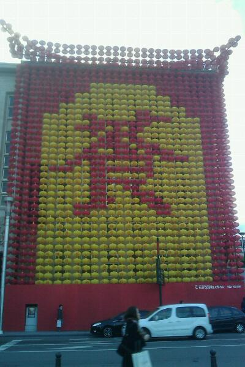
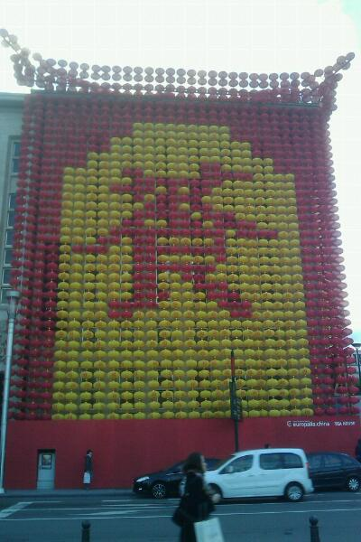

¿O Catalana? ¿O valenciana? ¿O España China?…

El blog-guía escrito por españoles en Bruselas para los hispanoparlantes que viven aquí y para los turistas que aprovechan los vuelos baratos para descubrir el chocolate, la cerveza, la Grand Place y tantas otras cosas buenas.

¿O Catalana? ¿O valenciana? ¿O España China?…

Me da en la nariz que los clientes de lujo que busca el Hotel Conrad no son precisamente los turistas que vienen a Bruselas, aunque también puede ser que estén promoviendo otro tipo de incentivos…
 Señoras y señores,
Señoras y señores,
Ya va siendo hora de que abandonen sus puestos frente a la pantalla del ordenador para pasar un buen rato en compañía de otros seres humanoides, escritores y lectores interneteros de blogs, tuiters, feisbucs y demás. Ha llegado el momento de que las gentes de Bruselas se sorprendan al vernos salir de nuestros cubículos y es por ello que os convocamos a la noche de los bloggers vivientes.
Tras el éxito de las anteriores quedadas- en las que realizamos un avanzado experimento sociológico para ver que horario era el preferido (noche o día) y parece que tuvo más adeptos la noche- Josel3 (el artista que ha realizado ese pedazo de flyer) y Ramón (el pesado que escribe esto) hemos decidido convocar una nueva quedada bloguera en Bruselas en la noche de Halloween. Somos dos blogueros españoles en Bélgica, con ganas de verles las caras a todos los que léen y les léen.
Requisitos:
Para que sea más fácil la identificación, rogamos porten las chapicas del niño gilipollas y las camisetas del EBE de la primera quedada.
Atención, apuntarse a la quedada significa comprometerse con estos votos:
Como insigne propietario de la presente entrada me comprometo a liarla parda en Bruselas en la noche de los bloggers vivientes. Ante lo ilustre del acontecimiento, haré todo lo posible e incluso más por pasarlo bien y que los demás lo pasen bien, además de portar un disfraz o detalle que me haga encajar mejor con el espíritu de tan especial ocasión.
Hagan el favor de apuntarse dándole al botoncico naranja ese en el que pone Register en la página creada a tal efecto, que así es más fácil la organización. Solo hay 2147483647 entradas, ¡que se acaban!
Para los tuiteros, nuestra etiqueta es #qb (por: ¡qué bueno!, ¡quedada bloguer!, ¡quedada en Bruselas!, ¡queso de Burgos!)
Encontraréis los mensajes sobre esta quedada y las anteriores en Blog Bruselas, además de en los selectos blogs y tuiters de sus participantes.
*Nota de la redacción Blogger= bloguer= bloguero= bloggero= yoquesecuantasformasmáshabrádeescribirlo
La literatura no entiende de idiomas. Y para que lo comprobéis os invito a una noche un tanto especial.
La Maison du Figuier (casa de la higuera) es un grupo de escritores franco-hispánico que armonizan e integran los dos idiomas en noches literarias.
El programa del viernes próximo comenzará por un debate literario sobre la obra de Bertolt Brecht, seguido de la lectura de poemas y prosa en francés y español de algunos escritores integrantes del grupo, así como invitados. Estos encuentros son muy distendidos y simpáticos. También el lugar es muy acogedor; en un bar de Ixelles que posee una sala de cultura al fondo del jardín.
Esta es la segunda vez que me proponen participar y compartir con ellos y con el público allí presente algunos de mis poemas en español. ¡Os aviso! Me pondré roja.
Os envío el programa y la dirección a continuación.

La Casa de la Higuera / La Maison du Figuier
el viernes 9 octubre 2009 a partir de 19h
en el café l’Imagin’Air, 6 place Fernand Cocq à Ixelles**
ENTRADA GRATIS
19h
1) El debate literario comenzará con una travesía por los caminos de la obra de Bertolt Brecht: las mujeres, el erotismo, el amor, una poética siempre actual en su universalidad, en una decena de poemas y de canciones extraídas de sus óperas, a través de una intermusicalidad de lenguas, un descanso que será amenizado con la música de : Serge Delandsheere (piano) et Coco Kunik (clarinete)
2) Autores invitados (lecturas):
Marcelle Collin (poemas, FR)
Gustavo Gómez (poemas, ES)
Serge Noël (poemas, FR)
Almudena Martín (poemas, ES)
Léon Laffut (prosas, FR)
3) Lecturas libres, (aquí si queréis podéis leer algo de vuestra propia cosecha) según la hora.
Cierre musical: Serge Delandsheere (piano) et Coco Kunik (clarinete)
 Hace unas horas que ha comenzado el festival de arte Bravo Bruselas (Bruxelles Bravo), el cual ofrecerá durante tres días más de 110 eventos en 80 lugares diferentes. El programa ocupa todo el día, desde bien tempranito hasta entrada la noche. Exposiciones, conciertos, actuaciones… la selección es muy amplia (demasiado para mí a estas horas), pero siempre os podéis dejar aconsejar por algún famoso, como el DJ Darko y la diseñadora Annemie Verbeke.
Hace unas horas que ha comenzado el festival de arte Bravo Bruselas (Bruxelles Bravo), el cual ofrecerá durante tres días más de 110 eventos en 80 lugares diferentes. El programa ocupa todo el día, desde bien tempranito hasta entrada la noche. Exposiciones, conciertos, actuaciones… la selección es muy amplia (demasiado para mí a estas horas), pero siempre os podéis dejar aconsejar por algún famoso, como el DJ Darko y la diseñadora Annemie Verbeke.
No olvidéis que además, este fin de semana se celebran también la Noche en Blanco y el Maratón de Bruselas.